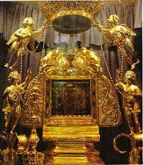
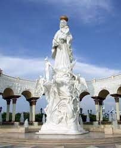
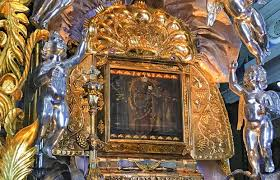
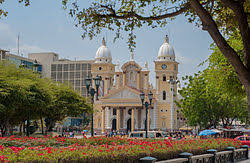
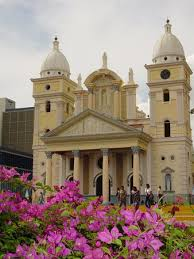
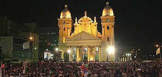

Virgen de Chiquinquirá

La Virgen del Rosario de Chiquinquirá es la formal patrona de la Ciudad de Maracaibo, del Estado Zulia, fue coronada canónicamente con las ofrendas de oro junto a piedras preciosas y semipreciosas tales como rubíes, zafiros y esmeraldas que su pueblo le ha obsequiado desde la colonia. Dicha corona está sostenida por cuatro ángeles de plata.
En la época hispánica la tabla fue cubierta en sus bordes con un repujado de oro, ciertos adornos sobre la imagen como coronas para la Virgen y el niño, la aureola, etc, los cuales han sido retirados en su mayoría a excepción de las corona.
Cuenta la imagen con un cetro de oro, zafiros y esmeraldas; la imagen también cuenta con una corona elaborada con piedras denominadas "tumas" obsequio de la etnia guajira.

El mes de noviembre es de especial significación para el pueblo zuliano, ya que durante el mismo se llevan a cabo las celebraciones en honor de la Chinita (equivalente zuliano de guajirita) o Virgen de la Chiquinquirá. Es por este motivo que durante estos días, la gaita suena con especial frenesí y alegría en todo el Zulia.
De las numerosas fiestas en honor a la Virgen, quizás la más impresionante sea el llamado Amanecer Gaitero, en el que el pueblo de Maracaibo se congrega en la madrugada del día 18 en la plazoleta de la Basílica, para cantarle a la Chinita las Mañanitas y el Cumpleaños Feliz.
Historia

Cuenta la historia que un día del año 1749, una sencilla mujer acababa de lavar su ropa en las orillas del lago de Maracaibo, cuando repentinamente vio flotando una tablita de madera fina, la cual recogió pensando en que le podría ser útil para tapar la tinaja de agua que tenía en el corredor de su casa. A la mañana siguiente, cuando estaba colando el café, la mujer escuchó unos golpes como si alguien estuviera llamando.
Fue a ver lo que sucedía y quedó sobrecogida de asombro al ver que la tablita brillaba y que aparecía en ella, la imagen de Nuestra Señora de Chiquinquirá. Por tal motivo, la mujer comenzó a gritar ¡Milagro! ¡Milagro!, por lo que de ahí proviene el nombre de El Milagro a la actual avenida junto al lago, donde estaba la casita de la lavandera.
Luego de lo sucedido, numerosas personas acudieron a presenciar el prodigio, convirtiéndose por esto la casa de la humilde mujer en un lugar de veneración de la Virgen por parte de múltiples creyentes.
Al tiempo de lo acontecido en casa de la humilde lavandera, las autoridades de Maracaibo decidieron realizar una procesión en honor de la Chinita. Cuenta la leyenda, que la Virgen era llevada en hombros por dos hombres elegidos por el propio Gobernador, cuando al doblar una esquina, la imagen se puso tan pesada que impidió seguir moviéndola.
Finalmente, después de muchos ruegos al cielo y súplicas a la Virgen, uno de los presentes exclamó: "Tal vez la Virgen no quiera ir a la Iglesia Matriz y prefiera la de San Juan de Dios".
Basílica

La Basílica de Nuestra Señora de Chiquinquirá, es el templo católico más concurrido del estado Zulia en Venezuela, ubicada en el centro de la ciudad de Maracaibo. Una construcción dedicada a la Virgen de Chiquinquirá, patrona del estado Zulia. La basílica cuenta con 3 naves y 2 torres, un altar mayor, un presbiterio y numerosos nichos dedicados a diversos santos.
Cultura

Es una obra arquitectónica representativa de la ciudad de Maracaibo y del estado Zulia, es mencionada en canciones de Gaita zuliana además de estar presente en postales, cuadros, y otras manifestaciones.
Cerca del 18 de noviembre de cada año, la basílica es el centro de la Feria de la Chinita, un evento socio cultural importante de la región, durante el cual además de las actividades religiosas como la procesión y la bajada de la virgen, se celebran eventos como el amanecer gaitero frente a la basílica, las corridas de toros en la plaza de toros el monumental de Maracaibo, el encendido de las luces navideñas de las avenidas Bella Vista y la Limpia, el juego de las Águilas del Zulia en el estadio Luis Aparicio, el Festival de la Orquídea por Super Sábado Sensacional.
Feria

La Feria de la Chinita de Maracaibo se realiza todos los años desde 1966 teniendo como día central el 18 de noviembre como Día de la Virgen de La Chinita, Chiquinquirá, que se celebra en honor a Nuestra Señora del Rosario de Chiquinquirá, nuestra querida Chinita.
La devoción a La Chinita, que data desde el 18 de noviembre de 1709, es una de las fiestas tradicionales más alegres y genuinas manifestaciones del fervor religioso de Venezuela, donde destacan las misas, serenatas y procesiones en honor a la Virgen, al son de la gaita zuliana.
Con el paso de los años la Feria de La Chinita ha tomado cuerpo para convertirse en una Feria con visos internacionales donde las fiestas, parrandas, conciertos, exposiciones culturales, artesanales y comerciales, encuentros y reencuentros, al son de la gaita y de la algarabía del marabino derrochan en entusiasmo y alegría sin igual.
• Sábado 29 de octubre: Bajada de la Virgen. El último sábado del mes de octubre miles de feligreses se apuestan en las instalaciones de la Basílica de Nuestra Señora de Chiquinquirá, para disfrutar y vivir paso a paso la bajada de la imagen desde su trono hasta tierra firme, para que la Virgen Morena se encuentre con sus fieles.
• Lunes 17 de noviembre: comienza la celebración en honor a La Chinita con la Serenata a la Virgen donde gaiteros y devotos de la Santa Madre cantan en su honor a las puertas de la Basílica de Nuestra Señora de Chiquinquirá esperando la llegada del 18, para agradecer por los favores concedidos.
• Martes 18 de noviembre: Día de la Virgen de La Chinita (día central de la celebración de la Feria), cuando se oficia una misa pontificia y se lleva a cabo la «procesión corta», que incluye un recorrido lacustre por todos los muelles de los principales puertos del estado.
• Domingo 4 de diciembre: Fin de las celebraciones religiosas a La Chinita con la procesión de la aurora, en la que se saca la imagen de la Basílica a las tres de la madrugada, para que reciba el día en la calle. Ese día la imagen es subida de nuevo al altar.